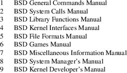
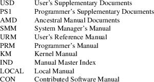
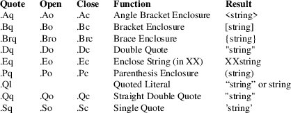
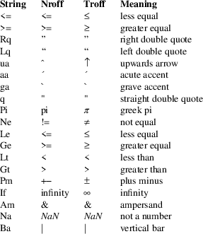

GROFF_MDOC(7) BSD Miscellaneous Information Manual GROFF_MDOC(7)
NAME
groff_mdoc — reference for groff’s mdoc implementation
SYNOPSIS
groff −mdoc file ...
DESCRIPTION
A complete reference for writing UNIX manual pages with the −mdoc macro package; a content-based and domain-based formatting package for GNU troff(1). Its predecessor, the −man(7) package, addressed page layout leaving the manipulation of fonts and other typesetting details to the individual author. In −mdoc, page layout macros make up the page structure domain which consists of macros for titles, section headers, displays and lists – essentially items which affect the physical position of text on a formatted page. In addition to the page structure domain, there are two more domains, the manual domain and the general text domain. The general text domain is defined as macros which perform tasks such as quoting or emphasizing pieces of text. The manual domain is defined as macros that are a subset of the day to day informal language used to describe commands, routines and related UNIX files. Macros in the manual domain handle command names, command-line arguments and options, function names, function parameters, pathnames, variables, cross references to other manual pages, and so on. These domain items have value for both the author and the future user of the manual page. Hopefully, the consistency gained across the manual set will provide easier translation to future documentation tools.
Throughout the UNIX manual pages, a manual entry is simply referred to as a man page, regardless of actual length and without sexist intention.
GETTING STARTED
The material presented in the remainder of this document is outlined as follows:
1.
TROFF IDIOSYNCRASIES
Macro Usage
Passing Space Characters in an Argument
Trailing Blank Space Characters
Escaping Special Characters
Other Possible Pitfalls
2.
A MANUAL PAGE TEMPLATE
3.
CONVENTIONS
4.
TITLE MACROS
5.
INTRODUCTION OF MANUAL AND GENERAL TEXT DOMAINS
What’s in a Name...
General Syntax
6.
MANUAL DOMAIN
Addresses
Author Name
Arguments
Configuration Declarations (Section Four Only)
Command Modifiers
Defined Variables
Errno’s
Environment Variables
Flags
Function Declarations
Function Types
Functions (Library Routines)
Function Arguments
Return Values
Exit Status
Interactive Commands
Library Names
Literals
Names
Options
Pathnames
Standards
Variable Types
Variables
Manual Page Cross References
7.
GENERAL TEXT DOMAIN
AT&T Macro
BSD Macro
NetBSD Macro
FreeBSD Macro
DragonFly Macro
OpenBSD Macro
BSD/OS Macro
UNIX Macro
Emphasis Macro
Font Mode
Enclosure and Quoting Macros
No-Op or Normal Text Macro
No-Space Macro
Section Cross References
Symbolics
Mathematical Symbols
References and Citations
Trade Names (or Acronyms and Type Names)
Extended Arguments
8.
PAGE STRUCTURE DOMAIN
Section Headers
Subsection Headers
Paragraphs and Line Spacing
Keeps
Examples and Displays
Lists and Columns
9.
MISCELLANEOUS MACROS
10.
PREDEFINED STRINGS
11.
DIAGNOSTICS
12.
FORMATTING WITH GROFF, TROFF, AND NROFF
13.
FILES
14.
SEE ALSO
15.
BUGS
TROFF IDIOSYNCRASIES
The −mdoc package attempts to simplify the process of writing a man page. Theoretically, one should not have to learn the tricky details of GNU troff(1) to use −mdoc; however, there are a few limitations which are unavoidable and best gotten out of the way. And, too, be forewarned, this package is not fast.
Macro
Usage
As in GNU troff(1), a macro is called by placing a
‘.’ (dot character) at the beginning of a line
followed by the two-character (or three-character) name for
the macro. There can be space or tab characters between the
dot and the macro name. Arguments may follow the macro
separated by spaces (but no tabs). It is the dot
character at the beginning of the line which causes GNU
troff(1) to interpret the next two (or more) characters as a
macro name. A single starting dot followed by nothing is
ignored. To place a ‘.’ (dot character) at the
beginning of an input line in some context other than a
macro invocation, precede the ‘.’ (dot) with the
‘\&’ escape sequence which translates
literally to a zero-width space, and is never displayed in
the output.
In general, GNU troff(1) macros accept an unlimited number of arguments (contrary to other versions of troff which can’t handle more than nine arguments). In limited cases, arguments may be continued or extended on the next line (See Extended Arguments below). Almost all macros handle quoted arguments (see Passing Space Characters in an Argument below).
Most of the −mdoc general text domain and manual domain macros are special in that their argument lists are parsed for callable macro names. This means an argument on the argument list which matches a general text or manual domain macro name (and which is defined to be callable) will be executed or called when it is processed. In this case the argument, although the name of a macro, is not preceded by a ‘.’ (dot). This makes it possible to nest macros; for example the option macro, ‘.Op’, may call the flag and argument macros, ‘Fl’ and ‘Ar’, to specify an optional flag with an argument:
[−s bytes]
is produced by ‘.Op Fl s Ar bytes’
To prevent a string from being interpreted as a macro name, precede the string with the escape sequence ‘\&’:
[Fl s Ar bytes]
is produced by ‘.Op \&Fl s \&Ar bytes’
Here the strings ‘Fl’ and ‘Ar’ are not interpreted as macros. Macros whose argument lists are parsed for callable arguments are referred to as parsed and macros which may be called from an argument list are referred to as callable throughout this document. This is a technical faux pas as almost all of the macros in −mdoc are parsed, but as it was cumbersome to constantly refer to macros as being callable and being able to call other macros, the term parsed has been used.
In the following, we call an −mdoc macro which starts a line (with a leading dot) a command if this distinction is necessary.
Passing Space
Characters in an Argument
Sometimes it is desirable to give as an argument a string
containing one or more blank space characters, say, to
specify arguments to commands which expect particular
arrangement of items in the argument list. Additionally, it
makes −mdoc working faster. For example, the
function command ‘.Fn’ expects the first
argument to be the name of a function and any remaining
arguments to be function parameters. As ANSI C
stipulates the declaration of function parameters in the
parenthesized parameter list, each parameter is guaranteed
to be at minimum a two word string. For example, int
foo.
There are two possible ways to pass an argument which contains an embedded space. One way of passing a string containing blank spaces is to use the hard or unpaddable space character ‘\ ’, that is, a blank space preceded by the escape character ‘\’. This method may be used with any macro but has the side effect of interfering with the adjustment of text over the length of a line. Troff sees the hard space as if it were any other printable character and cannot split the string into blank or newline separated pieces as one would expect. This method is useful for strings which are not expected to overlap a line boundary. An alternative is to use ‘\~’, a paddable (i.e. stretchable), unbreakable space (this is a GNU troff(1) extension). The second method is to enclose the string with double quotes.
For example:
fetch(char *str)
is created by ‘.Fn fetch char\ *str’
fetch(char *str)
can also be created by ‘.Fn fetch "char *str"’
If the ‘\’ before the space in the first example or double quotes in the second example were omitted, ‘.Fn’ would see three arguments, and the result would be:
fetch(char, *str)
Trailing
Blank Space Characters
Troff can be confused by blank space characters at the end
of a line. It is a wise preventive measure to globally
remove all blank spaces from ⟨
blank-space ⟩ ⟨
end-of-line ⟩ character sequences. Should the need
arise to use a blank character at the end of a line, it may
be forced with an unpaddable space and the
‘\&’ escape character. For example,
‘string\ \&’.
Escaping
Special Characters
Special characters like the newline character
‘\n’ are handled by replacing the
‘\’ with ‘\e’ (e.g.
‘\en’) to preserve the backslash.
Other
Possible Pitfalls
A warning is emitted when an empty input line is found
outside of displays (see below). Use ‘.sp’
instead. (Well, it is even better to use −mdoc
macros to avoid the usage of low-level commands.)
Leading spaces will cause a break and are output directly. Avoid this behaviour if possible. Similarly, do not use more than one space character between words in an ordinary text line; contrary to other text formatters, they are not replaced with a single space.
You can’t pass ‘"’ directly as an argument. Use ‘\*[q]’ (or ‘\*q’) instead.
By default, troff(1) inserts two space characters after a punctuation mark closing a sentence; characters like ‘)’ or ‘’’ are treated transparently, not influencing the sentence-ending behaviour. To change this, insert ‘\&’ before or after the dot:
The
.Ql .
character.
.Pp
The
.Ql \&.
character.
.Pp
.No test .
test
.Pp
.No test.
test
gives
The ‘’. character
The ‘.’ character.
test. test
test. test
As can be seen in the first and third line, −mdoc handles punctuation characters specially in macro arguments. This will be explained in section General Syntax below. In the same way, you have to protect trailing full stops of abbreviations with a trailing zero-width space: ‘e.g.\&’.
A comment in the source file of a man page can be either started with ‘.\"’ on a single line, ‘\"’ after some input, or ‘\#’ anywhere (the latter is a GNU troff(1) extension); the rest of such a line is ignored.
A MANUAL PAGE TEMPLATE
The body of a man page is easily constructed from a basic template:
.\" The
following commands are required for all man pages.
.Dd Month day, year
.Dt DOCUMENT_TITLE [section number] [architecture/volume]
.Os [OPERATING_SYSTEM] [version/release]
.Sh NAME
.Nm name
.Nd one line description of name
.\" This next command is for sections 2 and 3 only.
.\" .Sh LIBRARY
.Sh SYNOPSIS
.Sh DESCRIPTION
.\" The following commands should be uncommented and
.\" used where appropriate.
.\" .Sh IMPLEMENTATION NOTES
.\" This next command is for sections 2, 3, and 9 only
.\" (function return values).
.\" .Sh RETURN VALUES
.\" This next command is for sections 1, 6, 7, and 8
only.
.\" .Sh ENVIRONMENT
.\" .Sh FILES
.\" This next command is for sections 1, 6, and 8 only
.\" (command return values to the shell).
.\" .Sh EXIT STATUS
.\" .Sh EXAMPLES
.\" This next command is for sections 1, 4, 6, 7, 8,
and 9 only
.\" (fprintf/stderr type diagnostics).
.\" .Sh DIAGNOSTICS
.\" .Sh COMPATIBILITY
.\" This next command is for sections 2, 3, 4, and 9
only
.\" (settings of the errno variable).
.\" .Sh ERRORS
.\" .Sh SEE ALSO
.\" .Sh STANDARDS
.\" .Sh HISTORY
.\" .Sh AUTHORS
.\" .Sh CAVEATS
.\" .Sh BUGS
The first items in the template are the commands ‘.Dd’, ‘.Dt’, and ‘.Os’; the document date, the operating system the man page or subject source is developed or modified for, and the man page title (in upper case) along with the section of the manual the page belongs in. These commands identify the page and are discussed below in TITLE MACROS.
The remaining items in the template are section headers (.Sh); of which NAME, SYNOPSIS, and DESCRIPTION are mandatory. The headers are discussed in PAGE STRUCTURE DOMAIN, after presentation of MANUAL DOMAIN. Several content macros are used to demonstrate page layout macros; reading about content macros before page layout macros is recommended.
CONVENTIONS
In the description of all macros below, optional arguments are put into brackets. An ellipsis (‘...’) represents zero or more additional arguments. Alternative values for a parameter are separated with ‘|’. If there are alternative values for a mandatory parameter, braces are used (together with ‘|’) to enclose the value set. Meta-variables are specified within angles.
Example:
.Xx
⟨ foo⟩ {bar1 | bar2} [−test1 [−test2 |
−test3]] ...
Except stated explicitly, all macros are parsed and callable.
Note that a macro takes effect up to the next nested macro. For example, ‘.Ic foo Aq bar’ doesn’t produce ‘foo <bar>’ but ‘foo ⟨ bar⟩ ’. Consequently, a warning message is emitted for most commands if the first argument is a macro itself since it cancels the effect of the calling command completely. Another consequence is that quoting macros never insert literal quotes; ‘foo <bar>’ has been produced by ‘.Ic "foo <bar>"’.
Most macros have a default width value which can be used to specify a label width (−width) or offset (−offset) for the ‘.Bl’ and ‘.Bd’ macros. It is recommended not to use this rather obscure feature to avoid dependencies on local modifications of the −mdoc package.
TITLE MACROS
The title macros are part of the page structure domain but are presented first and separately for someone who wishes to start writing a man page yesterday. Three header macros designate the document title or manual page title, the operating system, and the date of authorship. These macros are called once at the very beginning of the document and are used to construct headers and footers only.
.Dt
[⟨ document title⟩ ] [⟨ section number⟩
] [⟨ volume⟩ ]
The document title is the subject of the man page and must be in CAPITALS due to troff limitations. If omitted, ‘UNTITLED’ is used. The section number may be a number in the range 1, ..., 9 or ‘unass’, ‘draft’, or ‘paper’. If it is specified, and no volume name is given, a default volume name is used.
Under BSD, the following sections are defined:

A volume name may be arbitrary or one of the following:

For compatibility, ‘MMI’ can be used for ‘IND’, and ‘LOC’ for ‘LOCAL’. Values from the previous table will specify a new volume name. If the third parameter is a keyword designating a computer architecture, its value is prepended to the default volume name as specified by the second parameter. By default, the following architecture keywords are defined:
acorn26, acorn32, algor, alpha, amd64, amiga, amigappc, arc, arm, arm26, arm32, armish, atari, aviion, beagle, bebox, cats, cesfic, cobalt, dreamcast, emips, evbarm, evbmips, evbppc, evbsh3, ews4800mips, hp300, hp700, hpcarm, hpcmips, hpcsh, hppa, hppa64, i386, ia64, ibmnws, iyonix, landisk, loongson, luna68k, luna88k, m68k, mac68k, macppc, mips, mips64, mipsco, mmeye, mvme68k, mvme88k, mvmeppc, netwinder, news68k, newsmips, next68k, ofppc, palm, pc532, playstation2, pmax, pmppc, powerpc, prep, rs6000, sandpoint, sbmips, sgi, sgimips, sh3, shark, socppc, solbourne, sparc, sparc64, sun2, sun3, tahoe, vax, x68k, x86_64, xen, zaurus
If the section number is neither a numeric expression in the range 1 to 9 nor one of the above described keywords, the third parameter is used verbatim as the volume name.
In the following examples, the left (which is identical to the right) and the middle part of the manual page header strings are shown. Note how ‘\&’ prevents the digit 7 from being a valid numeric expression.
.Dt FOO 7
‘FOO(7)’ ‘BSD Miscellaneous Information Manual’
.Dt FOO 7 bar
‘FOO(7)’ ‘BSD Miscellaneous Information Manual’
.Dt FOO \&7 bar
‘FOO(7)’ ‘bar’
.Dt FOO 2 i386
‘FOO(2)’ ‘BSD/i386 System Calls Manual’
.Dt FOO "" bar
‘FOO’ ‘bar’
Local, OS-specific additions might be found in the file mdoc.local; look for strings named ‘volume−ds−XXX’ (for the former type) and ‘volume−as−XXX’ (for the latter type); ‘XXX’ then denotes the keyword to be used with the ‘.Dt’ macro.
This macro is neither callable nor parsed.
.Os
[⟨ operating system⟩ ] [⟨ release⟩ ]
If the first parameter is empty, the default ‘BSD’ is used. This may be overridden in the local configuration file, mdoc.local. In general, the name of the operating system should be the common acronym, e.g. BSD or ATT. The release should be the standard release nomenclature for the system specified. In the following table, the possible second arguments for some predefined operating systems are listed. Similar to ‘.Dt’, local additions might be defined in mdoc.local; look for strings named ‘operating−system−XXX−YYY’, where ‘XXX’ is the acronym for the operating system and ‘YYY’ the release ID.
ATT
7th, 7, III, 3, V, V.2, V.3, V.4
BSD
3, 4, 4.1, 4.2, 4.3, 4.3t, 4.3T, 4.3r, 4.3R, 4.4
NetBSD
0.8, 0.8a, 0.9, 0.9a, 1.0, 1.0a, 1.1, 1.2, 1.2a, 1.2b, 1.2c, 1.2d, 1.2e, 1.3, 1.3a, 1.4, 1.4.1, 1.4.2, 1.4.3, 1.5, 1.5.1, 1.5.2, 1.5.3, 1.6, 1.6.1, 1.6.2, 1.6.3, 2.0, 2.0.1, 2.0.2, 2.0.3, 2.1, 3.0, 3.0.1, 3.0.2, 3.0.3, 3.1, 3.1.1, 4.0, 4.0.1, 5.0, 5.0.1, 5.0.2, 5.1, 5.1.2, 5.1.3, 5.1.4, 5.2, 5.2.1, 5.2.2, 6.0, 6.0.1, 6.0.2, 6.0.3, 6.0.4, 6.0.5, 6.1, 6.1.1, 6.1.2, 6.1.3, 6.1.4
FreeBSD
1.0, 1.1, 1.1.5, 1.1.5.1, 2.0, 2.0.5, 2.1, 2.1.5, 2.1.6, 2.1.7, 2.2, 2.2.1, 2.2.2, 2.2.5, 2.2.6, 2.2.7, 2.2.8, 3.0, 3.1, 3.2, 3.3, 3.4, 3.5, 4.0, 4.1, 4.1.1, 4.2, 4.3, 4.4, 4.5, 4.6, 4.6.2, 4.7, 4.8, 4.9, 4.10, 4.11, 5.0, 5.1, 5.2, 5.2.1, 5.3, 5.4, 5.5, 6.0, 6.1, 6.2, 6.3, 6.4, 7.0, 7.1, 7.2, 7.3, 7.4, 8.0, 8.1, 8.2, 8.3, 8.4, 9.0, 9.1, 9.2, 9.3, 10.0
OpenBSD
2.0, 2.1, 2.2, 2.3, 2.4, 2.5, 2.6, 2.7, 2.8, 2.9, 3.0, 3.1, 3.2, 3.3, 3.4, 3.5, 3.6, 3.7, 3.8, 3.9, 4.0, 4.1, 4.2, 4.3, 4.4, 4.5, 4.6, 4.7, 4.8, 4.9, 5.0, 5.1, 5.2, 5.3, 5.4, 5.5, 5.6
DragonFly
1.0, 1.1, 1.2, 1.3, 1.4, 1.5, 1.6, 1.8, 1.8.1, 1.9, 1.10, 1.12, 1.12.2, 1.13, 2.0, 2.2, 2.3, 2.4, 2.5, 2.6, 2.7, 2.8, 2.9, 2.9.1, 2.10, 2.10.1, 2.11, 2.12, 2.13, 3.0, 3.1, 3.2, 3.3, 3.4, 3.5, 3.6, 3.7, 3.8
Darwin
8.0.0, 8.1.0, 8.2.0, 8.3.0, 8.4.0, 8.5.0, 8.6.0, 8.7.0, 8.8.0, 8.9.0, 8.10.0, 8.11.0, 9.0.0, 9.1.0, 9.2.0, 9.3.0, 9.4.0, 9.5.0, 9.6.0, 9.7.0, 9.8.0, 10.1.0, 10.2.0, 10.3.0, 10.4.0, 10.5.0, 10.6.0, 10.7.0, 10.8.0, 11.0.0, 11.1.0, 11.2.0, 11.3.0, 11.4.0, 11.5.0, 12.0.0, 12.1.0, 12.2.0, 13.0.0, 13.1.0, 13.2.0, 13.3.0, 13.4.0, 14.0.0
For ATT, an unknown second parameter will be replaced with the string UNIX; for the other predefined acronyms it will be ignored and a warning message emitted. Unrecognized arguments are displayed as given in the page footer. For instance, a typical footer might be:
.Os BSD 4.3
giving ‘4.3 Berkeley Distribution’, or for a locally produced set
.Os CS Department
which will produce ‘CS Department’.
If the ‘.Os’ macro is not present, the bottom left corner of the manual page will be ugly.
This macro is neither callable nor parsed.
.Dd [
⟨ month⟩ ⟨ day⟩ , ⟨ year⟩
]
If ‘Dd’ has no arguments, ‘Epoch’ is used for the date string. If it has exactly three arguments, they are concatenated, separated with unbreakable space:
.Dd January 25, 2001
The month’s name shall not be abbreviated.
With any other number of arguments, the current date is used, ignoring the parameters.
As a special exception, the format
.Dd $Mdocdate: ⟨ month⟩ ⟨ day⟩ ⟨ year⟩ $
is also recognized. It is used in OpenBSD manuals to automatically insert the current date when committing.
This macro is neither callable nor parsed.
INTRODUCTION OF MANUAL AND GENERAL TEXT DOMAINS
What’s in a Name...
The manual domain macro names are derived from the day to
day informal language used to describe commands, subroutines
and related files. Slightly different variations of this
language are used to describe the three different aspects of
writing a man page. First, there is the description of
−mdoc macro command usage. Second is the
description of a UNIX command with −mdoc
macros, and third, the description of a command to a user in
the verbal sense; that is, discussion of a command in the
text of a man page.
In the first case, troff(1) macros are themselves a type of command; the general syntax for a troff command is:
.Xx argument1 argument2 ...
‘.Xx’ is a macro command, and anything following it are arguments to be processed. In the second case, the description of a UNIX command using the content macros is a bit more involved; a typical SYNOPSIS command line might be displayed as:
filter [−flag] ⟨
infile ⟩ ⟨
outfile ⟩
Here, filter is the command name and the bracketed string −flag is a flag argument designated as optional by the option brackets. In −mdoc terms, ⟨
infile ⟩ and ⟨
outfile ⟩ are called meta arguments; in this
example, the user has to replace the meta expressions given
in angle brackets with real file names. Note that in this
document meta arguments are used to describe
−mdoc commands; in most man pages, meta
variables are not specifically written with angle brackets.
The macros which formatted the above example:
.Nm filter
.Op Fl flag
.Ao Ar infile Ac Ao Ar outfile Ac
In the third case, discussion of commands and command syntax includes both examples above, but may add more detail. The arguments ⟨
infile ⟩ and ⟨
outfile ⟩ from the example above might be referred
to as operands or file arguments. Some
command-line argument lists are quite long:
make
[−eiknqrstv] [−D variable] [−d flags] [−f makefile] [−I directory] [−j max_jobs] [variable=value] [target ...]
Here one might talk about the command make and qualify the argument, makefile, as an argument to the flag, −f, or discuss the optional file operand target. In the verbal context, such detail can prevent confusion, however the −mdoc package does not have a macro for an argument to a flag. Instead the ‘Ar’ argument macro is used for an operand or file argument like target as well as an argument to a flag like variable. The make command line was produced from:
.Nm make
.Op Fl eiknqrstv
.Op Fl D Ar variable
.Op Fl d Ar flags
.Op Fl f Ar makefile
.Op Fl I Ar directory
.Op Fl j Ar max_jobs
.Op Ar variable Ns = Ns Ar value
.Bk
.Op Ar target ...
.Ek
The ‘.Bk’ and ‘.Ek’ macros are explained in Keeps.
General
Syntax
The manual domain and general text domain macros share a
similar syntax with a few minor deviations; most notably,
‘.Ar’, ‘.Fl’, ‘.Nm’, and
‘.Pa’ differ only when called without arguments;
and ‘.Fn’ and ‘.Xr’ impose an order
on their argument lists. All content macros are capable of
recognizing and properly handling punctuation, provided each
punctuation character is separated by a leading space. If a
command is given:
.Ar sptr, ptr),
The result is:
sptr, ptr),
The punctuation is not recognized and all is output in the font used by ‘.Ar’. If the punctuation is separated by a leading white space:
.Ar sptr , ptr ) ,
The result is:
sptr, ptr),
The punctuation is now recognized and output in the default font distinguishing it from the argument strings. To remove the special meaning from a punctuation character escape it with ‘\&’.
The following punctuation characters are recognized by −mdoc:
. , : ; (
) [ ] ? !
Troff is limited as a macro language, and has difficulty when presented with a string containing a member of the mathematical, logical or quotation set:
{+,−,/,*,%,<,>,<=,>=,=,==,&,‘,’,"}
The problem is that troff may assume it is supposed to actually perform the operation or evaluation suggested by the characters. To prevent the accidental evaluation of these characters, escape them with ‘\&’. Typical syntax is shown in the first content macro displayed below, ‘.Ad’.
MANUAL DOMAIN
Addresses
The address macro identifies an address construct.
Usage: .Ad ⟨
address ⟩ ...
.Ad addr1
addr1
.Ad addr1 .
addr1.
.Ad addr1 , file2
addr1, file2
.Ad f1 , f2 , f3 :
f1, f2, f3:
.Ad addr ) ) ,
addr)),
The default width is 12n.
Author
Name
The ‘.An’ macro is used to specify the name of
the author of the item being documented, or the name of the
author of the actual manual page.
Usage: .An ⟨
author name ⟩ ...
.An "Joe Author"
Joe Author
.An "Joe Author" ,
Joe Author,
.An "Joe Author" Aq nobody@FreeBSD.org
Joe Author <nobody@FreeBSD.org>
.An "Joe Author" ) ) ,
Joe Author)),
The default width is 12n.
In the AUTHORS section, the ‘.An’ command causes a line break allowing each new name to appear on its own line. If this is not desirable,
.An −nosplit
call will turn this off. To turn splitting back on, write
.An −split
Arguments
The .Ar argument macro may be used whenever an argument is
referenced. If called without arguments, the
‘file ...’ string is output.
Usage: .Ar [
⟨
argument⟩ ] ...
.Ar
file ...
.Ar file1
file1
.Ar file1 .
file1.
.Ar file1 file2
file1 file2
.Ar f1 f2 f3 :
f1 f2 f3:
.Ar file ) ) ,
file)),
The default width is 12n.
Configuration
Declaration (Section Four Only)
The ‘.Cd’ macro is used to demonstrate a
config(8) declaration for a device interface in a section
four manual.
Usage: .Cd ⟨
argument ⟩ ...
.Cd "device le0 at scode?"
device le0 at scode?
In the SYNOPSIS section a ‘.Cd’ command causes a line break before and after its arguments are printed.
The default width is 12n.
Command
Modifiers
The command modifier is identical to the ‘.Fl’
(flag) command with the exception that the ‘.Cm’
macro does not assert a dash in front of every argument.
Traditionally flags are marked by the preceding dash,
however, some commands or subsets of commands do not use
them. Command modifiers may also be specified in conjunction
with interactive commands such as editor commands. See
Flags.
The default width is 10n.
Defined
Variables
A variable (or constant) which is defined in an include file
is specified by the macro ‘.Dv’.
Usage: .Dv ⟨
defined variable ⟩ ...
.Dv MAXHOSTNAMELEN
MAXHOSTNAMELEN
.Dv TIOCGPGRP )
TIOCGPGRP)
The default width is 12n.
Errno’s
The ‘.Er’ errno macro specifies the error return
value for section 2, 3, and 9 library routines. The
second example below shows ‘.Er’ used with the
‘.Bq’ general text domain macro, as it would be
used in a section two manual page.
Usage: .Er ⟨
errno type ⟩ ...
.Er ENOENT
ENOENT
.Er ENOENT ) ;
ENOENT);
.Bq Er ENOTDIR
[ENOTDIR]
The default width is 17n.
Environment
Variables
The ‘.Ev’ macro specifies an environment
variable.
Usage: .Ev ⟨
argument ⟩ ...
.Ev DISPLAY
DISPLAY
.Ev PATH .
PATH.
.Ev PRINTER ) ) ,
PRINTER)),
The default width is 15n.
Flags
The ‘.Fl’ macro handles command-line flags. It
prepends a dash, ‘−’, to the flag. For
interactive command flags, which are not prepended with a
dash, the ‘.Cm’ (command modifier) macro is
identical, but without the dash.
Usage: .Fl ⟨
argument ⟩ ...
.Fl
−
.Fl cfv
−cfv
.Fl cfv .
−cfv.
.Cm cfv .
cfv.
.Fl s v t
−s −v −t
.Fl − ,
−−,
.Fl xyz ) ,
−xyz),
.Fl |
− |
The ‘.Fl’ macro without any arguments results in a dash representing stdin/stdout. Note that giving ‘.Fl’ a single dash will result in two dashes.
The default width is 12n.
Function
Declarations
The ‘.Fd’ macro is used in the SYNOPSIS
section with section two or three functions. It is neither
callable nor parsed.
Usage: .Fd ⟨
argument ⟩ ...
.Fd "#include <sys/types.h>"
#include <sys/types.h>
In the SYNOPSIS section a ‘.Fd’ command causes a line break if a function has already been presented and a break has not occurred. This leaves a nice vertical space in between the previous function call and the declaration for the next function.
The ‘.In’ macro, while in the SYNOPSIS section, represents the #include statement, and is the short form of the above example. It specifies the C header file as being included in a C program. It also causes a line break.
While not in the SYNOPSIS section, it represents the header file enclosed in angle brackets.
Usage: .In ⟨
header file ⟩
.In stdio.h
<stdio.h>
.In stdio.h
<stdio.h>
Function
Types
This macro is intended for the SYNOPSIS section. It
may be used anywhere else in the man page without problems,
but its main purpose is to present the function type in
kernel normal form for the SYNOPSIS of sections two
and three (it causes a line break, allowing the function
name to appear on the next line).
Usage: .Ft ⟨
type ⟩ ...
.Ft struct stat
struct stat
Functions
(Library Routines)
The ‘.Fn’ macro is modeled on ANSI C
conventions.
Usage: .Fn ⟨
function ⟩ [
⟨
parameter⟩ ] ...
.Fn getchar
getchar()
.Fn strlen ) ,
strlen()),
.Fn align "char *ptr" ,
align(char *ptr),
Note that any call to another macro signals the end of the ‘.Fn’ call (it will insert a closing parenthesis at that point).
For functions with many parameters (which is rare), the macros ‘.Fo’ (function open) and ‘.Fc’ (function close) may be used with ‘.Fa’ (function argument).
Example:
.Ft int
.Fo res_mkquery
.Fa "int op"
.Fa "char *dname"
.Fa "int class"
.Fa "int type"
.Fa "char *data"
.Fa "int datalen"
.Fa "struct rrec *newrr"
.Fa "char *buf"
.Fa "int buflen"
.Fc
Produces:
int
res_mkquery(int op, char *dname, int class, int type, char *data, int datalen, struct rrec *newrr, char *buf, int buflen)
In the SYNOPSIS section, the function will always begin at the beginning of line. If there is more than one function presented in the SYNOPSIS section and a function type has not been given, a line break will occur, leaving a nice vertical space between the current function name and the one prior.
The default width values of ‘.Fn’ and ‘.Fo’ are 12n and 16n, respectively.
Function
Arguments
The ‘.Fa’ macro is used to refer to function
arguments (parameters) outside of the SYNOPSIS
section of the manual or inside the SYNOPSIS section
if the enclosure macros ‘.Fo’ and
‘.Fc’ instead of ‘.Fn’ are used.
‘.Fa’ may also be used to refer to structure
members.
Usage: .Fa ⟨
function argument ⟩ ...
.Fa d_namlen ) ) ,
d_namlen)),
.Fa iov_len
iov_len
The default width is 12n.
Return
Values
The ‘.Rv’ macro generates text for use in the
RETURN VALUES section.
Usage: .Rv [
−std ] [⟨
function ⟩ ...]
For example, ‘.Rv −std atexit’ produces:
The atexit() function returns the value 0 if successful; otherwise the value −1 is returned and the global variable errno is set to indicate the error.
The −std option is valid only for manual page sections 2 and 3. Currently, this macro does nothing if used without the −std flag.
Exit
Status
The ‘.Ex’ macro generates text for use in the
DIAGNOSTICS section.
Usage: .Ex [
−std ] [⟨
utility ⟩ ...]
For example, ‘.Ex −std cat’ produces:
The cat utility exits 0 on success, and >0 if an error occurs.
The −std option is valid only for manual page sections 1, 6 and 8. Currently, this macro does nothing if used without the −std flag.
Interactive
Commands
The ‘.Ic’ macro designates an interactive or
internal command.
Usage: .Ic ⟨
argument ⟩ ...
.Ic :wq
:wq
.Ic "do while {...}"
do while {...}
.Ic setenv , unsetenv
setenv, unsetenv
The default width is 12n.
Library
Names
The ‘.Lb’ macro is used to specify the library
where a particular function is compiled in.
Usage: .Lb ⟨
argument ⟩ ...
Available arguments to ‘.Lb’ and their results are:
libarchive
Reading and Writing Streaming Archives Library (libarchive, −larchive)
libarm
ARM Architecture Library (libarm, −larm)
libarm32
ARM32 Architecture Library (libarm32, −larm32)
libbluetooth
Bluetooth Library (libbluetooth, −lbluetooth)
libbsm
Basic Security Module Library (libbsm, −lbsm)
libc
Standard C Library (libc, −lc)
libc_r
Reentrant C Library (libc_r, −lc_r)
libcalendar
Calendar Arithmetic Library (libcalendar, −lcalendar)
libcam
Common Access Method User Library (libcam, −lcam)
libcdk
Curses Development Kit Library (libcdk, −lcdk)
libcipher
FreeSec Crypt Library (libcipher, −lcipher)
libcompat
Compatibility Library (libcompat, −lcompat)
libcrypt
Crypt Library (libcrypt, −lcrypt)
libcurses
Curses Library (libcurses, −lcurses)
libdevinfo
Device and Resource Information Utility Library (libdevinfo, −ldevinfo)
libdevstat
Device Statistics Library (libdevstat, −ldevstat)
libdisk
Interface to Slice and Partition Labels Library (libdisk, −ldisk)
libdwarf
DWARF Access Library (libdwarf, −ldwarf)
libedit
Command Line Editor Library (libedit, −ledit)
libelf
ELF Access Library (libelf, −lelf)
libevent
Event Notification Library (libevent, −levent)
libfetch
File Transfer Library for URLs (libfetch, −lfetch)
libform
Curses Form Library (libform, −lform)
libgeom
Userland API Library for kernel GEOM subsystem (libgeom, −lgeom)
libgpib
General-Purpose Instrument Bus (GPIB) library (libgpib, −lgpib)
libi386
i386 Architecture Library (libi386, −li386)
libintl
Internationalized Message Handling Library (libintl, −lintl)
libipsec
IPsec Policy Control Library (libipsec, −lipsec)
libipx
IPX Address Conversion Support Library (libipx, −lipx)
libiscsi
iSCSI protocol library (libiscsi, −liscsi)
libjail
Jail Library (libjail, −ljail)
libkiconv
Kernel side iconv library (libkiconv, −lkiconv)
libkse
N:M Threading Library (libkse, −lkse)
libkvm
Kernel Data Access Library (libkvm, −lkvm)
libm
Math Library (libm, −lm)
libm68k
m68k Architecture Library (libm68k, −lm68k)
libmagic
Magic Number Recognition Library (libmagic, −lmagic)
libmd
Message Digest (MD4, MD5, etc.) Support Library (libmd, −lmd)
libmemstat
Kernel Memory Allocator Statistics Library (libmemstat, −lmemstat)
libmenu
Curses Menu Library (libmenu, −lmenu)
libnetgraph
Netgraph User Library (libnetgraph, −lnetgraph)
libnetpgp
Netpgp signing, verification, encryption and decryption (libnetpgp, −lnetpgp)
libossaudio
OSS Audio Emulation Library (libossaudio, −lossaudio)
libpam
Pluggable Authentication Module Library (libpam, −lpam)
libpcap
Packet Capture Library (libpcap, −lpcap)
libpci
PCI Bus Access Library (libpci, −lpci)
libpmc
Performance Counters Library (libpmc, −lpmc)
libposix
POSIX Compatibility Library (libposix, −lposix)
libprop
Property Container Object Library (libprop, −lprop)
libpthread
POSIX Threads Library (libpthread, −lpthread)
libpuffs
puffs Convenience Library (libpuffs, −lpuffs)
librefuse
File System in Userspace Convenience Library (librefuse, −lrefuse)
libresolv
DNS Resolver Library (libresolv, −lresolv)
librpcsec_gss
RPC GSS-API Authentication Library (librpcsec_gss, −lrpcsec_gss)
librpcsvc
RPC Service Library (librpcsvc, −lrpcsvc)
librt
POSIX Real-time Library (librt, −lrt)
libsdp
Bluetooth Service Discovery Protocol User Library (libsdp, −lsdp)
libssp
Buffer Overflow Protection Library (libssp, −lssp)
libSystem
System Library (libSystem, −lSystem)
libtermcap
Termcap Access Library (libtermcap, −ltermcap)
libterminfo
Terminal Information Library (libterminfo, −lterminfo)
libthr
1:1 Threading Library (libthr, −lthr)
libufs
UFS File System Access Library (libufs, −lufs)
libugidfw
File System Firewall Interface Library (libugidfw, −lugidfw)
libulog
User Login Record Library (libulog, −lulog)
libusbhid
USB Human Interface Devices Library (libusbhid, −lusbhid)
libutil
System Utilities Library (libutil, −lutil)
libvgl
Video Graphics Library (libvgl, −lvgl)
libx86_64
x86_64 Architecture Library (libx86_64, −lx86_64)
libz
Compression Library (libz, −lz)
Local, OS-specific additions might be found in the file mdoc.local; look for strings named ‘str−Lb−XXX’. ‘XXX’ then denotes the keyword to be used with the ‘.Lb’ macro.
In the LIBRARY section an ‘.Lb’ command causes a line break before and after its arguments are printed.
Literals
The ‘.Li’ literal macro may be used for special
characters, variable constants, etc. − anything which
should be displayed as it would be typed.
Usage: .Li ⟨
argument ⟩ ...
.Li \en
\n
.Li M1 M2 M3 ;
M1 M2 M3;
.Li cntrl−D ) ,
cntrl-D),
.Li 1024 ...
1024 ...
The default width is 16n.
Names
The ‘.Nm’ macro is used for the document title
or subject name. It has the peculiarity of remembering the
first argument it was called with, which should always be
the subject name of the page. When called without arguments,
‘.Nm’ regurgitates this initial name for the
sole purpose of making less work for the author.
‘.Nm’ causes a line break within the
SYNOPSIS section.
Note: A section two or three document function name is addressed with the ‘.Nm’ in the NAME section, and with ‘.Fn’ in the SYNOPSIS and remaining sections. For interactive commands, such as the ‘while’ command keyword in csh(1), the ‘.Ic’ macro should be used. While ‘.Ic’ is nearly identical to ‘.Nm’, it can not recall the first argument it was invoked with.
Usage: .Nm [
⟨
argument⟩ ] ...
.Nm groff_mdoc
groff_mdoc
.Nm \−mdoc
−mdoc
.Nm foo ) ) ,
foo)),
.Nm :
groff_mdoc:
The default width is 10n.
Options
The ‘.Op’ macro places option brackets around
any remaining arguments on the command line, and places any
trailing punctuation outside the brackets. The macros
‘.Oo’ and ‘.Oc’ (which produce an
opening and a closing option bracket respectively) may be
used across one or more lines or to specify the exact
position of the closing parenthesis.
Usage: .Op [
⟨
option⟩ ] ...
.Op
[]
.Op Fl k
[−k]
.Op Fl k ) .
[−k]).
.Op Fl k Ar kookfile
[−k kookfile]
.Op Fl k Ar kookfile ,
[−k kookfile],
.Op Ar objfil Op Ar corfil
[objfil [corfil]]
.Op Fl c Ar objfil Op Ar corfil ,
[−c objfil [corfil]],
.Op word1 word2
[word1 word2]
.Li .Op Oo Ao option Ac Oc ...
.Op [
⟨
option⟩ ] ...
Here a typical example of the ‘.Oo’ and ‘.Oc’ macros:
.Oo
.Op Fl k Ar kilobytes
.Op Fl i Ar interval
.Op Fl c Ar count
.Oc
Produces:
[
[−k kilobytes] [−i interval] [−c count] ]
The default width values of ‘.Op’ and ‘.Oo’ are 14n and 10n, respectively.
Pathnames
The ‘.Pa’ macro formats path or file names. If
called without arguments, the ‘~’ string
is output, which represents the current user’s home
directory.
Usage: .Pa [
⟨
pathname⟩ ] ...
.Pa
~
.Pa /usr/share
/usr/share
.Pa /tmp/fooXXXXX ) .
/tmp/fooXXXXX).
The default width is 32n.
Standards
The ‘.St’ macro replaces standard abbreviations
with their formal names.
Usage: .St ⟨
abbreviation ⟩ ...
Available pairs for “Abbreviation/Formal Name” are:
ANSI/ISO C
−ansiC
ANSI X3.159-1989 (“ANSI C89”)
−ansiC−89
ANSI X3.159-1989 (“ANSI C89”)
−isoC
ISO/IEC 9899:1990 (“ISO C90”)
−isoC−90
ISO/IEC 9899:1990 (“ISO C90”)
−isoC−99
ISO/IEC 9899:1999 (“ISO C99”)
−isoC−2011
ISO/IEC 9899:2011 (“ISO C11”)
POSIX Part 1: System API
−iso9945−1−90
ISO/IEC 9945-1:1990 (“POSIX.1”)
−iso9945−1−96
ISO/IEC 9945-1:1996 (“POSIX.1”)
−p1003.1
IEEE Std 1003.1 (“POSIX.1”)
−p1003.1−88
IEEE Std 1003.1-1988 (“POSIX.1”)
−p1003.1−90
ISO/IEC 9945-1:1990 (“POSIX.1”)
−p1003.1−96
ISO/IEC 9945-1:1996 (“POSIX.1”)
−p1003.1b−93
IEEE Std 1003.1b-1993 (“POSIX.1”)
−p1003.1c−95
IEEE Std 1003.1c-1995 (“POSIX.1”)
−p1003.1g−2000
IEEE Std 1003.1g-2000 (“POSIX.1”)
−p1003.1i−95
IEEE Std 1003.1i-1995 (“POSIX.1”)
−p1003.1−2001
IEEE Std 1003.1-2001 (“POSIX.1”)
−p1003.1−2004
IEEE Std 1003.1-2004 (“POSIX.1”)
−p1003.1−2008
IEEE Std 1003.1-2008 (“POSIX.1”)
POSIX Part 2: Shell and Utilities
−iso9945−2−93
ISO/IEC 9945-2:1993 (“POSIX.2”)
−p1003.2
IEEE Std 1003.2 (“POSIX.2”)
−p1003.2−92
IEEE Std 1003.2-1992 (“POSIX.2”)
−p1003.2a−92
IEEE Std 1003.2a-1992 (“POSIX.2”)
X/Open
−susv2
Version 2 of the Single UNIX Specification (“SUSv2”)
−susv3
Version 3 of the Single UNIX Specification (“SUSv3”)
−svid4
System V Interface Definition, Fourth Edition (“SVID4”)
−xbd5
X/Open Base Definitions Issue 5 (“XBD5”)
−xcu5
X/Open Commands and Utilities Issue 5 (“XCU5”)
−xcurses4.2
X/Open Curses Issue 4, Version 2 (“XCURSES4.2”)
−xns5
X/Open Networking Services Issue 5 (“XNS5”)
−xns5.2
X/Open Networking Services Issue 5.2 (“XNS5.2”)
−xpg3
X/Open Portability Guide Issue 3 (“XPG3”)
−xpg4
X/Open Portability Guide Issue 4 (“XPG4”)
−xpg4.2
X/Open Portability Guide Issue 4, Version 2 (“XPG4.2”)
−xsh5
X/Open System Interfaces and Headers Issue 5 (“XSH5”)
Miscellaneous
−ieee754
IEEE Std 754-1985
−iso8601
ISO 8601
−iso8802−3
ISO/IEC 8802-3:1989
Variable
Types
The ‘.Vt’ macro may be used whenever a type is
referenced. In the SYNOPSIS section, it causes a line
break (useful for old style variable declarations).
Usage: .Vt ⟨
type ⟩ ...
.Vt extern char *optarg ;
extern char *optarg;
.Vt FILE *
FILE *
Variables
Generic variable reference.
Usage: .Va ⟨
variable ⟩ ...
.Va count
count
.Va settimer ,
settimer,
.Va "int *prt" ) :
int *prt):
.Va "char s" ] ) ) ,
char s])),
The default width is 12n.
Manual Page
Cross References
The ‘.Xr’ macro expects the first argument to be
a manual page name. The optional second argument, if a
string (defining the manual section), is put into
parentheses.
Usage: .Xr ⟨
man page name ⟩ [
⟨
section⟩ ] ...
.Xr mdoc
mdoc
.Xr mdoc ,
mdoc,
.Xr mdoc 7
mdoc(7)
.Xr xinit 1x ;
xinit(1x);
The default width is 10n.
GENERAL TEXT DOMAIN
AT&T Macro
Usage: .At [
⟨
version⟩ ] ...
.At
AT&T UNIX
.At v6 .
Version 6 AT&T UNIX.
The following values for ⟨
version ⟩ are possible:
32v, v1, v2, v3, v4, v5, v6, v7, III, V, V.1, V.2, V.3, V.4
BSD Macro
Usage: .Bx {
−alpha | −beta | −devel } ...
.Bx [
⟨
version⟩ [
⟨
release⟩ ] ] ...
.Bx
BSD
.Bx 4.3 .
4.3BSD.
.Bx −devel
BSD (currently under development)
⟨
version ⟩ will be prepended to the string
‘BSD’. The following values for ⟨
release ⟩ are possible:
Reno, reno, Tahoe, tahoe, Lite, lite, Lite2, lite2
NetBSD Macro
Usage: .Nx [
⟨
version⟩ ] ...
.Nx
NetBSD
.Nx 1.4 .
NetBSD 1.4.
For possible values of ⟨
version ⟩ see the description of the ‘.Os’ command above in section TITLE MACROS.
FreeBSD Macro
Usage: .Fx [
⟨
version⟩ ] ...
.Fx
FreeBSD
.Fx 2.2 .
FreeBSD 2.2.
For possible values of ⟨
version ⟩ see the description of the ‘.Os’ command above in section TITLE MACROS.
DragonFly Macro
Usage: .Dx [
⟨
version⟩ ] ...
.Dx
DragonFly
.Dx 1.4 .
DragonFly 1.4.
For possible values of ⟨
version ⟩ see the description of the ‘.Os’ command above in section TITLE MACROS.
OpenBSD Macro
Usage: .Ox [
⟨
version⟩ ] ...
.Ox 1.0
OpenBSD 1.0
BSD/OS Macro
Usage: .Bsx [
⟨
version⟩ ] ...
.Bsx 1.0
BSD/OS 1.0
UNIX Macro
Usage: .Ux ...
.Ux
UNIX
Emphasis
Macro
Text may be stressed or emphasized with the
‘.Em’ macro. The usual font for emphasis is
italic.
Usage: .Em ⟨
argument ⟩ ...
.Em does not
does not
.Em exceed 1024 .
exceed 1024.
.Em vide infra ) ) ,
vide infra)),
The default width is 10n.
Font Mode
The ‘.Bf’ font mode must be ended with the
‘.Ef’ macro (the latter takes no arguments).
Font modes may be nested within other font modes.
‘.Bf’ has the following syntax:
.Bf ⟨
font mode ⟩
⟨
font mode ⟩ must be one of the following three types:
Em | −emphasis
Same as if the ‘.Em’ macro was used for the entire block of text.
Li | −literal
Same as if the ‘.Li’ macro was used for the entire block of text.
Sy | −symbolic
Same as if the ‘.Sy’ macro was used for the entire block of text.
Both macros are neither callable nor parsed.
Enclosure and
Quoting Macros
The concept of enclosure is similar to quoting. The object
being to enclose one or more strings between a pair of
characters like quotes or parentheses. The terms quoting and
enclosure are used interchangeably throughout this document.
Most of the one-line enclosure macros end in small letter
‘q’ to give a hint of quoting, but there are a
few irregularities. For each enclosure macro there is also a
pair of open and close macros which end in small letters
‘o’ and ‘c’ respectively.

All macros ending with ‘q’ and ‘o’ have a default width value of 12n.
.Eo, .Ec
These macros expect the first argument to be the opening and closing strings respectively.
.Es, .En
Due to the nine-argument limit in the original troff program two other macros have been implemented which are now rather obsolete: ‘.Es’ takes the first and second parameter as the left and right enclosure string, which are then used to enclose the arguments of ‘.En’. The default width value is 12n for both macros.
.Eq
The first and second arguments of this macro are the opening and closing strings respectively, followed by the arguments to be enclosed.
.Ql
The quoted literal macro behaves differently in troff and nroff mode. If formatted with nroff, a quoted literal is always quoted. If formatted with troff, an item is only quoted if the width of the item is less than three constant width characters. This is to make short strings more visible where the font change to literal (constant width) is less noticeable.
The default width is 16n.
.Pf
The prefix macro suppresses the whitespace between its first and second argument:
.Pf ( Fa name2
(name2
The default width is 12n.
The ‘.Ns’ macro (see below) performs the analogous suffix function.
.Ap
The ‘.Ap’ macro inserts an apostrophe and exits any special text modes, continuing in ‘.No’ mode.
Examples of quoting:
.Aq
⟨ ⟩
.Aq Pa ctype.h ) ,
⟨ ctype.h⟩ ),
.Bq
[]
.Bq Em Greek , French .
[Greek, French].
.Dq
“”
.Dq string abc .
“string abc”.
.Dq ´^[A−Z]´
“´^[A-Z]´”
.Ql man mdoc
‘man mdoc’
""
.Qq string ) ,
"string"),
.Qq string Ns ),
"string),"
.Sq
‘’
.Sq string
‘string’
.Em or Ap ing
or’ing
For a good example of nested enclosure macros, see the ‘.Op’ option macro. It was created from the same underlying enclosure macros as those presented in the list above. The ‘.Xo’ and ‘.Xc’ extended argument list macros are discussed below.
No-Op or
Normal Text Macro
The ‘.No’ macro can be used in a macro command
line for parameters which should not be formatted. Be
careful to add ‘\&’ to the word
‘No’ if you really want that English word (and
not the macro) as a parameter.
Usage: .No ⟨
argument ⟩ ...
.No test Ta with Ta tabs
test with tabs
The default width is 12n.
No-Space
Macro
The ‘.Ns’ macro suppresses insertion of a space
between the current position and its first parameter. For
example, it is useful for old style argument lists where
there is no space between the flag and argument:
Usage: ... ⟨
argument ⟩ Ns [
⟨
argument⟩ ] ...
.Ns ⟨
argument ⟩ ...
.Op Fl I Ns Ar directory
[−Idirectory]
Note: The ‘.Ns’ macro always invokes the ‘.No’ macro after eliminating the space unless another macro name follows it. If used as a command (i.e., the second form above in the ‘Usage’ line), ‘.Ns’ is identical to ‘.No’.
Section Cross
References
The ‘.Sx’ macro designates a reference to a
section header within the same document.
Usage: .Sx ⟨
section reference ⟩ ...
.Sx FILES
FILES
The default width is 16n.
Symbolics
The symbolic emphasis macro is generally a boldface macro in
either the symbolic sense or the traditional English
usage.
Usage: .Sy ⟨
symbol ⟩ ...
.Sy Important Notice
Important Notice
The default width is 6n.
Mathematical
Symbols
Use this macro for mathematical symbols and similar
things.
Usage: .Ms ⟨
math symbol ⟩ ...
.Ms sigma
sigma
The default width is 6n.
References
and Citations
The following macros make a modest attempt to handle
references. At best, the macros make it convenient to
manually drop in a subset of refer(1) style references.
.Rs
Reference start (does not take arguments). Causes a line break in the SEE ALSO section and begins collection of reference information until the reference end macro is read.
.Re
Reference end (does not take arguments). The reference is printed.
.%A
Reference author name; one name per invocation.
.%B
Book title.
.%C
City/place.
.%D
Date.
.%I
Issuer/publisher name.
.%J
Journal name.
.%N
Issue number.
.%O
Optional information.
.%P
Page number.
.%Q
Corporate or foreign author.
.%R
Report name.
.%T
Title of article.
.%U
Optional hypertext reference.
.%V
Volume.
Macros beginning with ‘%’ are not callable but accept multiple arguments in the usual way. Only the ‘.Tn’ macro is handled properly as a parameter; other macros will cause strange output. ‘.%B’ and ‘.%T’ can be used outside of the ‘.Rs/.Re’ environment.
Example:
.Rs
.%A "Matthew Bar"
.%A "John Foo"
.%T "Implementation Notes on foobar(1)"
.%R "Technical Report
ABC−DE−12−345"
.%Q "Drofnats College"
.%C "Nowhere"
.%D "April 1991"
.Re
produces
Matthew Bar
and
John Foo ,
Implementation Notes on foobar(1) ,
Technical Report ABC-DE-12-345 ,
Drofnats College ,
Nowhere ,
April 1991 .
Trade Names
(or Acronyms and Type Names)
The trade name macro prints its arguments in a smaller font.
Its intended use is to imitate a small caps fonts for
uppercase acronyms.
Usage: .Tn ⟨
symbol ⟩ ...
.Tn DEC
DEC
.Tn ASCII
ASCII
The default width is 10n.
Extended
Arguments
The .Xo and .Xc macros allow one to extend an argument list
on a macro boundary for the ‘.It’ macro (see
below). Note that .Xo and .Xc are implemented similarly to
all other macros opening and closing an enclosure (without
inserting characters, of course). This means that the
following is true for those macros also.
Here is an example of ‘.Xo’ using the space mode macro to turn spacing off:
.Sm off
.It Xo Sy I Ar operation
.No \en Ar count No \en
.Xc
.Sm on
produces
Ioperation\ncount\n
Another one:
.Sm off
.It Cm S No / Ar old_pattern Xo
.No / Ar new_pattern
.No / Op Cm g
.Xc
.Sm on
produces
S/old_pattern
/new_pattern/[g]
Another example of ‘.Xo’ and enclosure macros: Test the value of a variable.
.It Xo
.Ic .ifndef
.Oo \&! Oc Ns Ar variable Oo
.Ar operator variable ...
.Oc Xc
produces
.ifndef [
!]variable [
operator variable ...]
PAGE STRUCTURE DOMAIN
Section Headers
The following ‘.Sh’ section header macros are
required in every man page. The remaining section headers
are recommended at the discretion of the author writing the
manual page. The ‘.Sh’ macro is parsed but not
generally callable. It can be used as an argument in a call
to ‘.Sh’ only; it then reactivates the default
font for ‘.Sh’.
The default width is 8n.
.Sh NAME
The ‘.Sh NAME’ macro is mandatory. If not specified, headers, footers and page layout defaults will not be set and things will be rather unpleasant. The NAME section consists of at least three items. The first is the ‘.Nm’ name macro naming the subject of the man page. The second is the name description macro, ‘.Nd’, which separates the subject name from the third item, which is the description. The description should be the most terse and lucid possible, as the space available is small.
‘.Nd’ first prints ‘−’, then all its arguments.
.Sh LIBRARY
This section is for section two and three function calls. It should consist of a single ‘.Lb’ macro call; see Library Names.
.Sh SYNOPSIS
The SYNOPSIS section describes the typical usage of the subject of a man page. The macros required are either ‘.Nm’, ‘.Cd’, or ‘.Fn’ (and possibly ‘.Fo’, ‘.Fc’, ‘.Fd’, and ‘.Ft’). The function name macro ‘.Fn’ is required for manual page sections 2 and 3; the command and general name macro ‘.Nm’ is required for sections 1, 5, 6, 7, and 8. Section 4 manuals require a ‘.Nm’, ‘.Fd’ or a ‘.Cd’ configuration device usage macro. Several other macros may be necessary to produce the synopsis line as shown below:
cat [−benstuv] [−] file ...
The following macros were used:
.Nm cat
.Op Fl benstuv
.Op Fl
.Ar
.Sh DESCRIPTION
In most cases the first text in the DESCRIPTION section is a brief paragraph on the command, function or file, followed by a lexical list of options and respective explanations. To create such a list, the ‘.Bl’ (begin list), ‘.It’ (list item) and ‘.El’ (end list) macros are used (see Lists and Columns below).
.Sh IMPLEMENTATION NOTES
Implementation specific information should be placed here.
.Sh RETURN VALUES
Sections 2, 3 and 9 function return values should go here. The ‘.Rv’ macro may be used to generate text for use in the RETURN VALUES section for most section 2 and 3 library functions; see Return Values.
The following ‘.Sh’ section headers are part of the preferred manual page layout and must be used appropriately to maintain consistency. They are listed in the order in which they would be used.
.Sh ENVIRONMENT
The ENVIRONMENT section should reveal any related environment variables and clues to their behavior and/or usage.
.Sh FILES
Files which are used or created by the man page subject should be listed via the ‘.Pa’ macro in the FILES section.
.Sh EXAMPLES
There are several ways to create examples. See the Examples and Displays section below for details.
.Sh DIAGNOSTICS
Diagnostic messages from a command should be placed in this section. The ‘.Ex’ macro may be used to generate text for use in the DIAGNOSTICS section for most section 1, 6 and 8 commands; see Exit Status.
.Sh COMPATIBILITY
Known compatibility issues (e.g. deprecated options or parameters) should be listed here.
.Sh ERRORS
Specific error handling, especially from library functions (man page sections 2, 3, and 9) should go here. The ‘.Er’ macro is used to specify an error (errno).
.Sh SEE ALSO
References to other material on the man page topic and cross references to other relevant man pages should be placed in the SEE ALSO section. Cross references are specified using the ‘.Xr’ macro. Currently refer(1) style references are not accommodated.
It is recommended that the cross references are sorted on the section number, then alphabetically on the names within a section, and placed in that order and comma separated. Example:
ls(1), ps(1), group(5), passwd(5)
.Sh STANDARDS
If the command, library function or file adheres to a specific implementation such as IEEE Std 1003.2 (“POSIX.2”) or ANSI X3.159-1989 (“ANSI C89”) this should be noted here. If the command does not adhere to any standard, its history should be noted in the HISTORY section.
.Sh HISTORY
Any command which does not adhere to any specific standards should be outlined historically in this section.
.Sh AUTHORS
Credits should be placed here. Use the ‘.An’ macro for names and the ‘.Aq’ macro for e-mail addresses within optional contact information. Explicitly indicate whether the person authored the initial manual page or the software or whatever the person is being credited for.
.Sh BUGS
Blatant problems with the topic go here.
User-specified ‘.Sh’ sections may be added; for example, this section was set with:
.Sh "PAGE STRUCTURE DOMAIN"
Subsection
Headers
Subsection headers have exactly the same syntax as section
headers: ‘.Ss’ is parsed but not generally
callable. It can be used as an argument in a call to
‘.Ss’ only; it then reactivates the default font
for ‘.Ss’.
The default width is 8n.
Paragraphs and Line Spacing
.Pp
The ‘.Pp’ paragraph command may be used to specify a line space where necessary. The macro is not necessary after a ‘.Sh’ or ‘.Ss’ macro or before a ‘.Bl’ or ‘.Bd’ macro (which both assert a vertical distance unless the −compact flag is given).
The macro is neither callable nor parsed and takes no arguments; an alternative name is ‘.Lp’.
Keeps
The only keep that is implemented at this time is for words.
The macros are ‘.Bk’ (begin keep) and
‘.Ek’ (end keep). The only option that
‘.Bk’ accepts currently is −words
(this is also the default if no option is given) which is
useful for preventing line breaks in the middle of options.
In the example for the make command-line arguments (see
What’s in a Name), the keep prevented nroff
from placing up the flag and the argument on separate
lines.
Both macros are neither callable nor parsed.
More work needs to be done with the keep macros; specifically, a −line option should be added.
Examples and
Displays
There are seven types of displays.
.D1
(This is D-one.) Display one line of indented text. This macro is parsed but not callable.
−ldghfstru
The above was produced by: .D1 Fl ldghfstru.
.Dl
(This is D-ell.) Display one line of indented literal text. The ‘.Dl’ example macro has been used throughout this file. It allows the indentation (display) of one line of text. Its default font is set to constant width (literal). ‘.Dl’ is parsed but not callable.
% ls −ldg /usr/local/bin
The above was produced by: .Dl % ls \−ldg /usr/local/bin.
.Bd
Begin display. The ‘.Bd’ display must be ended with the ‘.Ed’ macro. It has the following syntax:
.Bd
{
−literal | −filled | −unfilled |
−ragged | −centered} [
−offset ⟨
string⟩ ] [
−file ⟨
file name⟩ ] [
−compact]
−ragged
Fill, but do not adjust the right margin (only left-justify).
−centered
Center lines between the current left and right margin. Note that each single line is centered.
−unfilled
Do not fill; display a block of text as typed, using line breaks as specified by the user. This can produce overlong lines without warning messages.
−filled
Display a filled block. The block of text is formatted (i.e., the text is justified on both the left and right side).
−literal
Display block with literal font (usually fixed-width). Useful for source code or simple tabbed or spaced text.
−file ⟨
file name⟩
The file whose name follows the −file flag is read and displayed before any data enclosed with ‘.Bd’ and ‘.Ed’, using the selected display type. Any troff/−mdoc commands in the file will be processed.
−offset ⟨
string⟩
If −offset is specified with one of the following strings, the string is interpreted to indicate the level of indentation for the forthcoming block of text:
left
Align block on the current left margin; this is the default mode of ‘.Bd’.
center
Supposedly center the block. At this time unfortunately, the block merely gets left aligned about an imaginary center margin.
indent
Indent by one default indent value or tab. The default indent value is also used for the ‘.D1’ and ‘.Dl’ macros, so one is guaranteed the two types of displays will line up. The indentation value is normally set to 6n or about two thirds of an inch (six constant width characters).
indent−two
Indent two times the default indent value.
right
This left aligns the block about two inches from the right side of the page. This macro needs work and perhaps may never do the right thing within troff.
If ⟨
string ⟩ is a valid numeric expression instead
(with a scale indicator other than
‘u’), use that value for indentation. The
most useful scale indicators are ‘m’ and
‘n’, specifying the so-called Em and
En square. This is approximately the width of the
letters ‘m’ and ‘n’ respectively of
the current font (for nroff output, both scale indicators
give the same values). If ⟨
string ⟩ isn’t a numeric expression, it is tested
whether it is an −mdoc macro name, and the
default offset value associated with this macro is used.
Finally, if all tests fail, the width of ⟨
string ⟩ (typeset with a fixed-width font) is taken as
the offset.
−compact
Suppress insertion of vertical space before begin of display.
.Ed
End display (takes no arguments).
Lists and
Columns
There are several types of lists which may be initiated with
the ‘.Bl’ begin-list macro. Items within the
list are specified with the ‘.It’ item macro,
and each list must end with the ‘.El’ macro.
Lists may be nested within themselves and within displays.
The use of columns inside of lists or lists inside of
columns is unproven.
In addition, several list attributes may be specified such as the width of a tag, the list offset, and compactness (blank lines between items allowed or disallowed). Most of this document has been formatted with a tag style list (−tag).
It has the following syntax forms:
.Bl
{
−hang | −ohang | −tag | −diag |
−inset} [
−width ⟨
string⟩ ] [
−offset ⟨
string⟩ ] [
−compact]
.Bl
−column [
−offset ⟨
string⟩ ] ⟨
string1⟩ ⟨
string2⟩ ...
.Bl
{
−item | −enum [
−nested] | −bullet | −hyphen |
−dash} [
−offset ⟨
string⟩ ] [
−compact]
And now a detailed description of the list types.
−bullet
A bullet list.
.Bl
−bullet −offset indent −compact
.It
Bullet one goes here.
.It
Bullet two here.
.El
Produces:
•
Bullet one goes here.
•
Bullet two here.
−dash (or −hyphen)
A dash list.
.Bl −dash
−offset indent −compact
.It
Dash one goes here.
.It
Dash two here.
.El
Produces:
−
Dash one goes here.
−
Dash two here.
−enum
An enumerated list.
.Bl −enum
−offset indent −compact
.It
Item one goes here.
.It
And item two here.
.El
The result:
1.
Item one goes here.
2.
And item two here.
If you want to nest enumerated lists, use the −nested flag (starting with the second-level list):
.Bl −enum
−offset indent −compact
.It
Item one goes here
.Bl −enum −nested −compact
.It
Item two goes here.
.It
And item three here.
.El
.It
And item four here.
.El
Result:
1.
Item one goes here.
1.1.
Item two goes here.
1.2.
And item three here.
2.
And item four here.
−item
A list of type −item without list markers.
.Bl −item
−offset indent
.It
Item one goes here.
Item one goes here.
Item one goes here.
.It
Item two here.
Item two here.
Item two here.
.El
Produces:
Item one goes here. Item one goes here. Item one goes here.
Item two here. Item two here. Item two here.
−tag
A list with tags. Use −width to specify the tag width.
SL
sleep time of the process (seconds blocked)
PAGEIN
number of disk I/O’s resulting from references by the process to pages not loaded in core.
UID
numerical user-id of process owner
PPID
numerical id of parent of process priority (non-positive when in non-interruptible wait)
The raw text:
.Bl −tag
−width "PPID" −compact −offset
indent
.It SL
sleep time of the process (seconds blocked)
.It PAGEIN
number of disk
.Tn I/O Ns ’s
resulting from references by the process
to pages not loaded in core.
.It UID
numerical user−id of process owner
.It PPID
numerical id of parent of process priority
(non−positive when in non−interruptible wait)
.El
−diag
Diag lists create section four diagnostic lists and are similar to inset lists except callable macros are ignored. The −width flag is not meaningful in this context.
Example:
.Bl −diag
.It You can’t use Sy here.
The message says all.
.El
produces
You can’t use Sy here. The message says all.
−hang
A list with hanging tags.
Hanged
labels appear similar to tagged lists when the label is smaller than the label width.
Longer hanged list labels
blend into the paragraph unlike tagged paragraph labels.
And the unformatted text which created it:
.Bl −hang
−offset indent
.It Em Hanged
labels appear similar to tagged lists when the
label is smaller than the label width.
.It Em Longer hanged list labels
blend into the paragraph unlike
tagged paragraph labels.
.El
−ohang
Lists with overhanging tags do not use indentation for the items; tags are written to a separate line.
SL
sleep time of the process (seconds blocked)
PAGEIN
number of disk I/O’s resulting from references by the process to pages not loaded in core.
UID
numerical user-id of process owner
PPID
numerical id of parent of process priority (non-positive when in non-interruptible wait)
The raw text:
.Bl
−ohang −offset indent
.It Sy SL
sleep time of the process (seconds blocked)
.It Sy PAGEIN
number of disk
.Tn I/O Ns ’s
resulting from references by the process
to pages not loaded in core.
.It Sy UID
numerical user−id of process owner
.It Sy PPID
numerical id of parent of process priority
(non−positive when in non−interruptible wait)
.El
−inset
Here is an example of inset labels:
Tag
The tagged list (also called a tagged paragraph) is the most common type of list used in the Berkeley manuals. Use a −width attribute as described below.
Diag
Diag lists create section four diagnostic lists and are similar to inset lists except callable macros are ignored.
Hang
Hanged labels are a matter of taste.
Ohang
Overhanging labels are nice when space is constrained.
Inset
Inset labels are useful for controlling blocks of paragraphs and are valuable for converting −mdoc manuals to other formats.
Here is the source text which produced the above example:
.Bl
−inset −offset indent
.It Em Tag
The tagged list (also called a tagged paragraph)
is the most common type of list used in the
Berkeley manuals.
.It Em Diag
Diag lists create section four diagnostic lists
and are similar to inset lists except callable
macros are ignored.
.It Em Hang
Hanged labels are a matter of taste.
.It Em Ohang
Overhanging labels are nice when space is constrained.
.It Em Inset
Inset labels are useful for controlling blocks of
paragraphs and are valuable for converting
.Nm −mdoc
manuals to other formats.
.El
−column
This list type generates multiple columns. The number of columns and the width of each column is determined by the arguments to the −column list, ⟨ string1⟩ , ⟨ string2⟩ , etc. If ⟨ stringN⟩ starts with a ‘.’ (dot) immediately followed by a valid −mdoc macro name, interpret ⟨ stringN⟩ and use the width of the result. Otherwise, the width of ⟨ stringN⟩ (typeset with a fixed-width font) is taken as the Nth column width.
Each ‘.It’ argument is parsed to make a row, each column within the row is a separate argument separated by a tab or the ‘.Ta’ macro.
The table:
String Nroff
Troff
<= <= ≤
>= >= ≥
was produced by:
.Bl
−column −offset indent ".Sy String"
".Sy Nroff" ".Sy Troff"
.It Sy String Ta Sy Nroff Ta Sy Troff
.It Li <= Ta <= Ta \*(<=
.It Li >= Ta >= Ta \*(>=
.El
Don’t abuse this list type! For more complicated cases it might be far better and easier to use tbl(1), the table preprocessor.
Other keywords:
−width ⟨
string⟩
If ⟨ string⟩ starts with a ‘.’ (dot) immediately followed by a valid −mdoc macro name, interpret ⟨ string⟩ and use the width of the result. Almost all lists in this document use this option.
Example:
.Bl −tag
−width ".Fl test Ao Ar string Ac"
.It Fl test Ao Ar string Ac
This is a longer sentence to show how the
.Fl width
flag works in combination with a tag list.
.El
gives:
−test ⟨
string⟩
This is a longer sentence to show how the −width flag works in combination with a tag list.
(Note that the current state of −mdoc is saved before ⟨ string⟩ is interpreted; afterwards, all variables are restored again. However, boxes (used for enclosures) can’t be saved in GNU troff(1); as a consequence, arguments must always be balanced to avoid nasty errors. For example, do not write ‘.Ao Ar string’ but ‘.Ao Ar string Xc’ instead if you really need only an opening angle bracket.)
Otherwise, if ⟨ string⟩ is a valid numeric expression (with a scale indicator other than ‘u’), use that value for indentation. The most useful scale indicators are ‘m’ and ‘n’, specifying the so-called Em and En square. This is approximately the width of the letters ‘m’ and ‘n’ respectively of the current font (for nroff output, both scale indicators give the same values). If ⟨ string⟩ isn’t a numeric expression, it is tested whether it is an −mdoc macro name, and the default width value associated with this macro is used. Finally, if all tests fail, the width of ⟨ string⟩ (typeset with a fixed-width font) is taken as the width.
If a width is not specified for the tag list type, ‘6n’ is used.
−offset ⟨
string⟩
If ⟨ string⟩ is indent, a default indent value (normally set to 6n, similar to the value used in ‘.Dl’ or ‘.Bd’) is used. If ⟨ string⟩ is a valid numeric expression instead (with a scale indicator other than ‘u’), use that value for indentation. The most useful scale indicators are ‘m’ and ‘n’, specifying the so-called Em and En square. This is approximately the width of the letters ‘m’ and ‘n’ respectively of the current font (for nroff output, both scale indicators give the same values). If ⟨ string⟩ isn’t a numeric expression, it is tested whether it is an −mdoc macro name, and the default offset value associated with this macro is used. Finally, if all tests fail, the width of ⟨ string⟩ (typeset with a fixed-width font) is taken as the offset.
−compact
Suppress insertion of vertical space before the list and between list items.
MISCELLANEOUS MACROS
Here a list of the remaining macros which do not fit well into one of the above sections. We couldn’t find real examples for the following macros: ‘.Me’ and ‘.Ot’. They are documented here for completeness − if you know how to use them properly please send a mail to groff@gnu.org (including an example).
.Bt
prints
is currently in beta test.
It is neither callable nor parsed and takes no arguments.
.Fr
Usage: .Fr ⟨
function return value ⟩ ...
Don’t use this macro. It allows a break right before the return value (usually a single digit) which is bad typographical behaviour. Use ‘\~’ to tie the return value to the previous word.
.Hf
Use this macro to include a (header) file literally. It first prints ‘File:’ followed by the file name, then the contents of ⟨
file ⟩ .
Usage: .Hf ⟨
file ⟩
It is neither callable nor parsed.
.Lk
To be written.
.Me
Exact usage unknown. The documentation in the −mdoc source file describes it as a macro for “menu entries”.
Its default width is 6n.
.Mt
To be written.
.Ot
Exact usage unknown. The documentation in the −mdoc source file describes it as “old function type (fortran)”.
.Sm
Activate (toggle) space mode.
Usage: .Sm [
on | off ] ...
If space mode is off, no spaces between macro arguments are inserted. If called without a parameter (or if the next parameter is neither ‘on’ nor ‘off’, ‘.Sm’ toggles space mode.
.Ud
prints
currently under development.
It is neither callable nor parsed and takes no arguments.
PREDEFINED STRINGS
The following strings are predefined:

The names of the columns Nroff and Troff are a bit misleading; Nroff shows the ASCII representation, while Troff gives the best glyph form available. For example, a Unicode enabled TTY-device will have proper glyph representations for all strings, whereas the enhancement for a Latin1 TTY-device is only the plus-minus sign.
String names which consist of two characters can be written as ‘\*(xx’; string names which consist of one character can be written as ‘\*x’. A generic syntax for a string name of any length is ‘\*[xxx]’ (this is a GNU troff(1) extension).
DIAGNOSTICS
The debugging macro ‘.Db’ available in previous versions of −mdoc has been removed since GNU troff(1) provides better facilities to check parameters; additionally, many error and warning messages have been added to this macro package, making it both more robust and verbose.
The only remaining debugging macro is ‘.Rd’ which yields a register dump of all global registers and strings. A normal user will never need it.
FORMATTING WITH GROFF, TROFF, AND NROFF
By default, the package inhibits page breaks, headers, and footers if displayed with a TTY device like ‘latin1’ or ‘unicode’, to make the manual more efficient for viewing on-line. This behaviour can be changed (e.g. to create a hardcopy of the TTY output) by setting the register ‘cR’ to zero while calling groff(1), resulting in multiple pages instead of a single, very long page:
groff −Tlatin1 −rcR=0 −mdoc foo.man > foo.txt
For double-sided printing, set register ‘D’ to 1:
groff −Tps −rD1 −mdoc foo.man > foo.ps
To change the document font size to 11pt or 12pt, set register ‘S’ accordingly:
groff −Tdvi −rS11 −mdoc foo.man > foo.dvi
Register ‘S’ is ignored for TTY devices.
The line and title length can be changed by setting the registers ‘LL’ and ‘LT’, respectively:
groff −Tutf8 −rLL=100n −rLT=100n −mdoc foo.man | less
If not set, both registers default to 78n for TTY devices and 6.5i otherwise.
FILES
doc.tmac
The main manual macro package.
mdoc.tmac
A wrapper file to call doc.tmac.
mdoc/doc-common
Common strings, definitions, stuff related typographic output.
mdoc/doc-nroff
Definitions used for a TTY output device.
mdoc/doc-ditroff
Definitions used for all other devices.
mdoc.local
Local additions and customizations.
andoc.tmac
Use this file if you don’t know whether the −mdoc or the −man package should be used. Multiple man pages (in either format) can be handled.
SEE ALSO
groff(1), man(1), troff(1), groff_man(7)
BUGS
Section 3f has not been added to the header routines.
‘.Nm’ font should be changed in NAME section.
‘.Fn’ needs to have a check to prevent splitting up if the line length is too short. Occasionally it separates the last parenthesis, and sometimes looks ridiculous if a line is in fill mode.
The list and display macros do not do any keeps and certainly should be able to.
BSD November 2, 2010 BSD